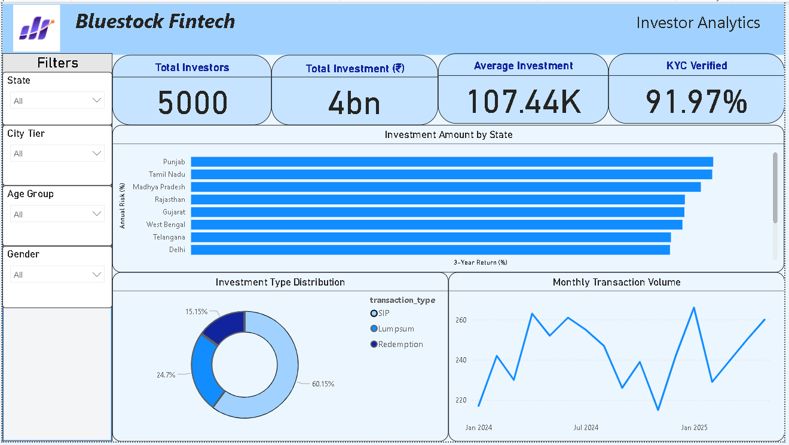
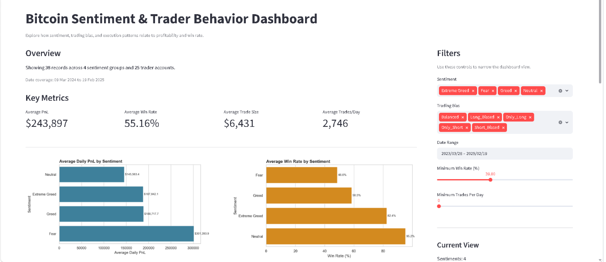
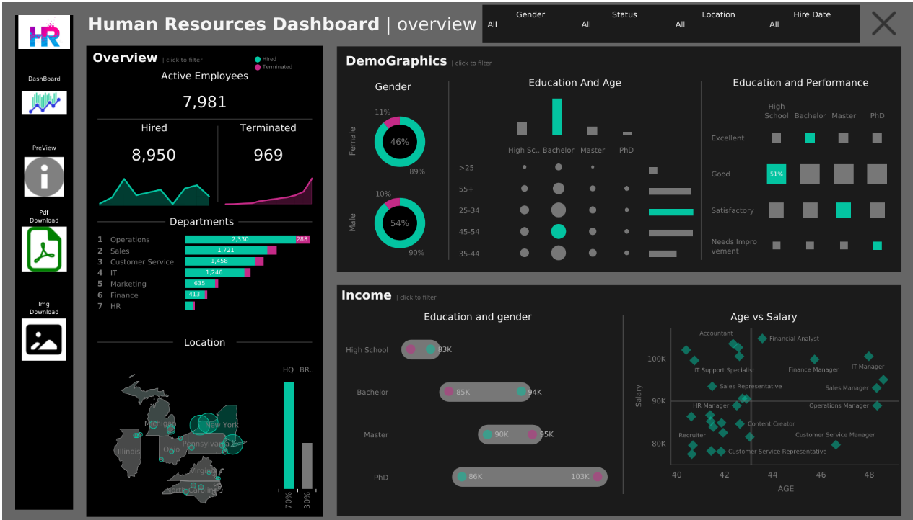

Bluestock Fintech Investor Analytics
Interactive dashboard visualizing investment distribution and performance for a fintech client.
View Details →Data Analytics & Business Intelligence Specialist
Leveraging data to drive insights and strategic decisions. Passionate about transforming complex datasets into actionable intelligence.
Highly analytical and results-driven Data Analyst with a strong foundation in statistical analysis, data modeling, and business intelligence. Proven ability to extract meaningful insights from large, complex datasets, develop interactive dashboards, and communicate findings effectively to stakeholders. Eager to apply expertise in data-driven problem-solving to contribute to organizational growth and efficiency.
Proficient in SQL, Python, Power BI, Tableau, and Excel, with experience across various industries including finance, retail, and healthcare. Committed to continuous learning and staying abreast of emerging trends in data science and analytics.
University Name, City
Sep 2023 - Expected Dec 2024
Another University, City
Aug 2019 - May 2023
Tech Solutions Inc., City
May 2024 - Aug 2024
A professional overview of my career milestones.
Recognized for outstanding academic performance during my undergraduate studies (2020, 2021).
Awarded for the "Automated Sentiment Analysis" final year project, demonstrating novel application of NLP.
Received internal recognition for providing key data insights that led to a 10% operational cost reduction in internship.
Explore some of my featured data analytics projects on GitHub.

Interactive dashboard visualizing investment distribution and performance for a fintech client.
View Details →
Analyzed social media sentiment towards Bitcoin to predict market trends.
View Details →
Developed a comprehensive HR dashboard for employee attrition and performance insights.
View Details →Whether you have a project in mind, a question, or just want to say hello, feel free to reach out.